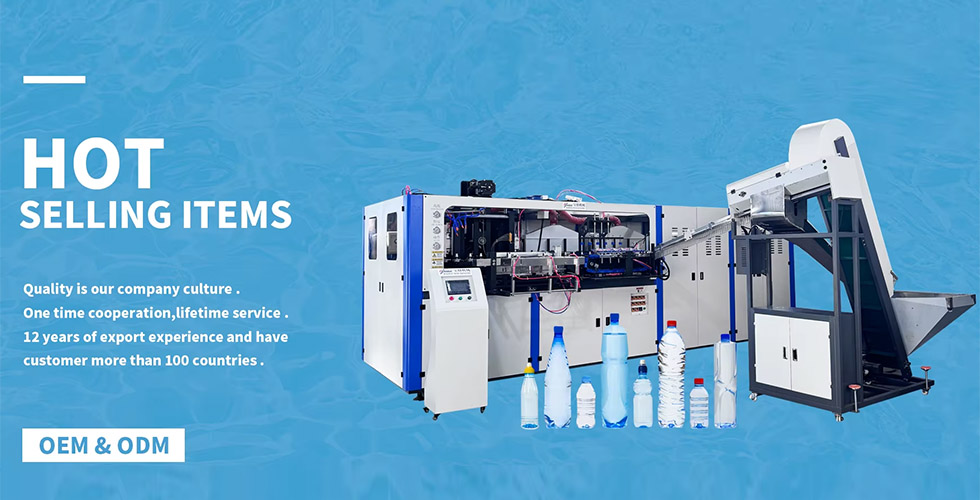
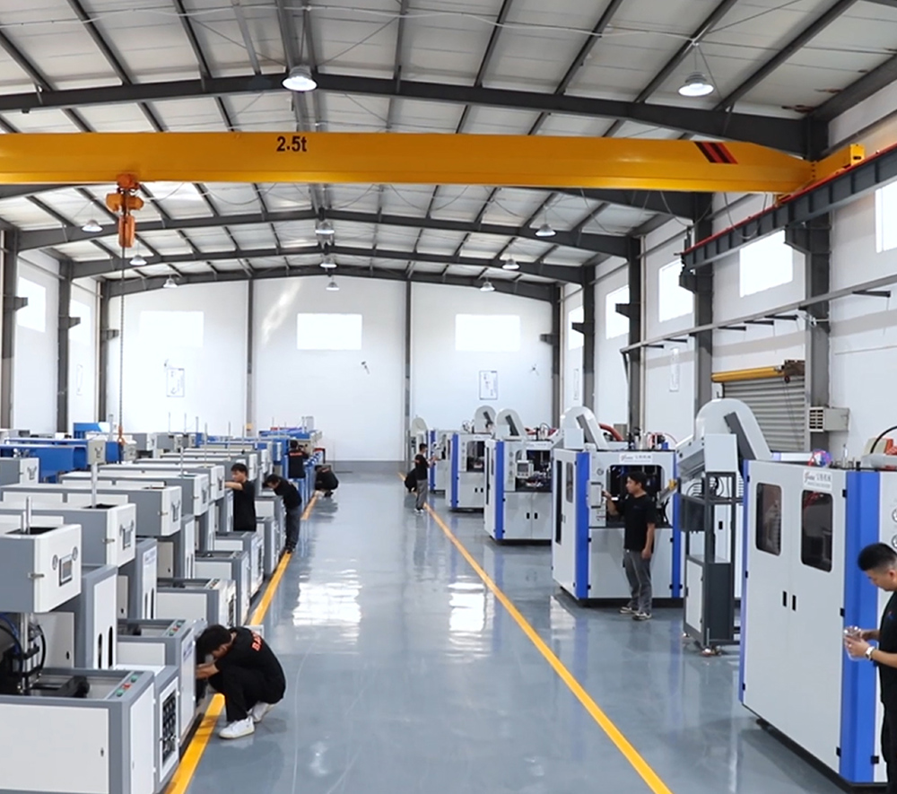
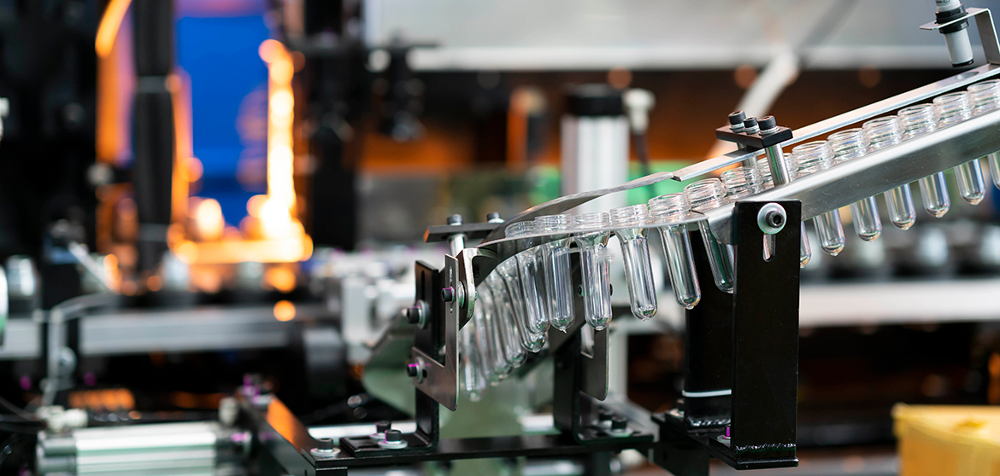
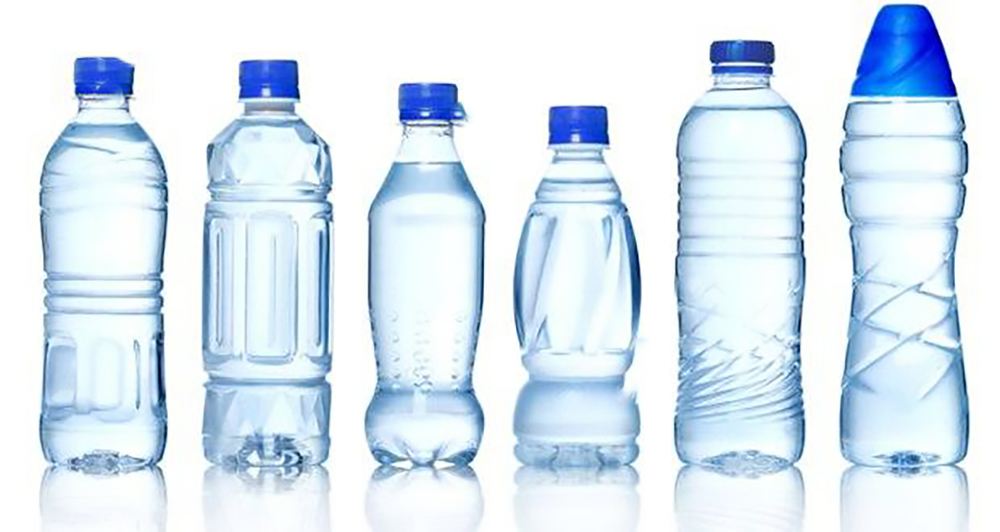

2024/12/30
Admin
Cheap China Quality Mineral Water Bottle Blow Molding Machine
DUA SABA IMPEX can produce various shapes and sizes of plastic bottles and containers...

Your Location: Home » News

DUA SABA IMPEX can produce various shapes and sizes of plastic bottles and containers...
5L blow molding machine adopts human-computer interface...

1.How to operate the bottle blowing machine?...

Plastic goes through a manufacturing process...